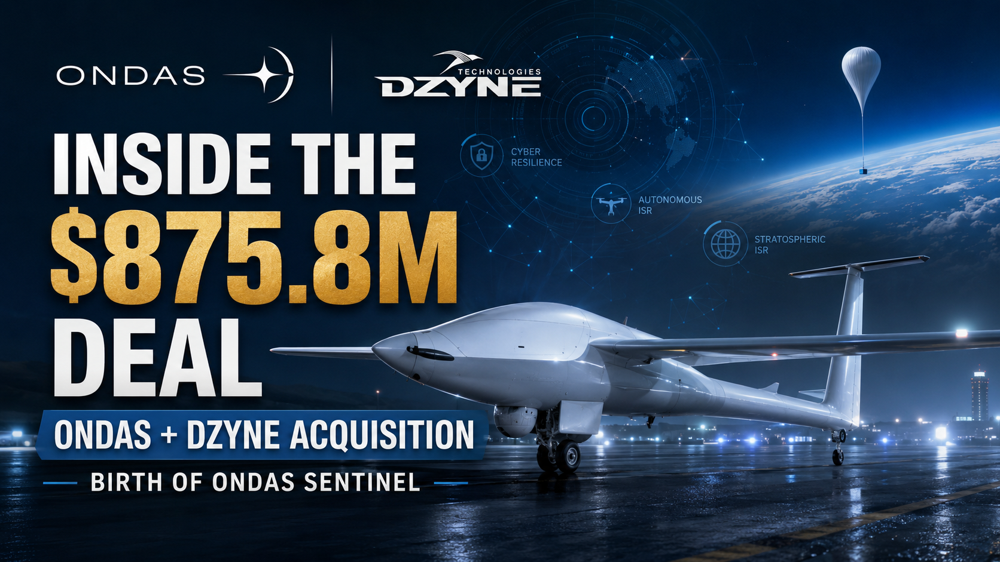
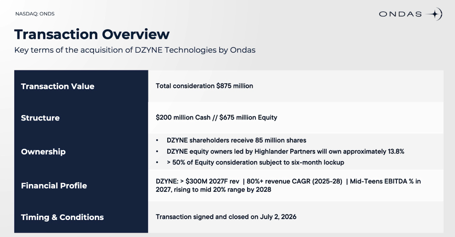
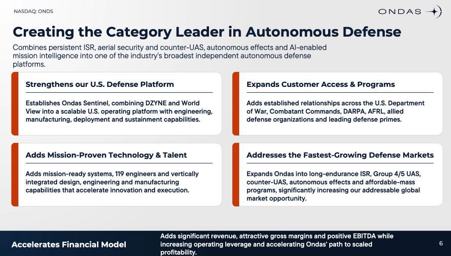
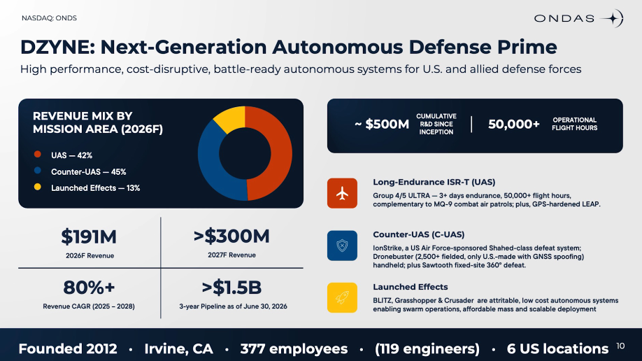
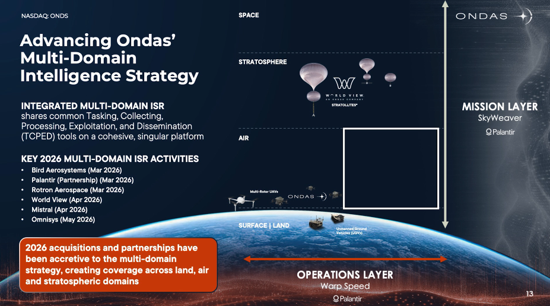
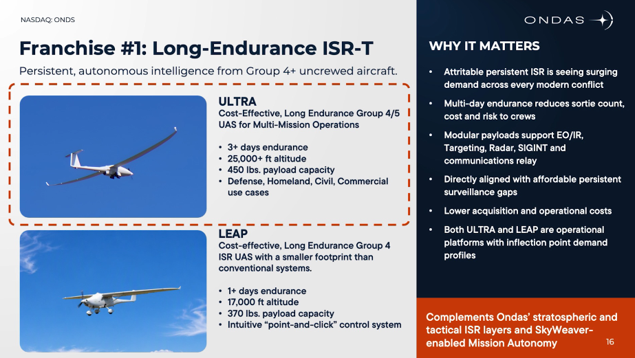
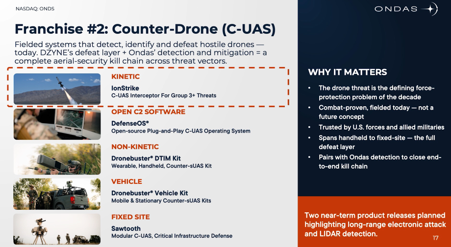
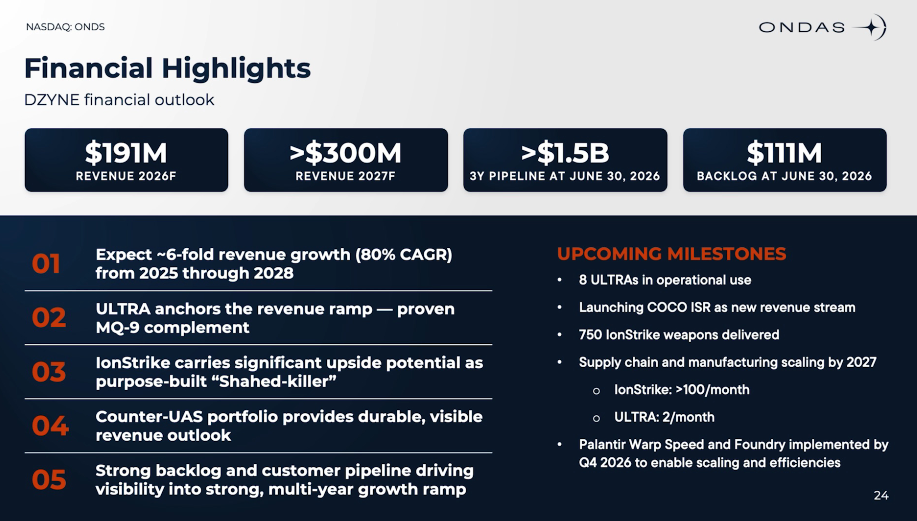
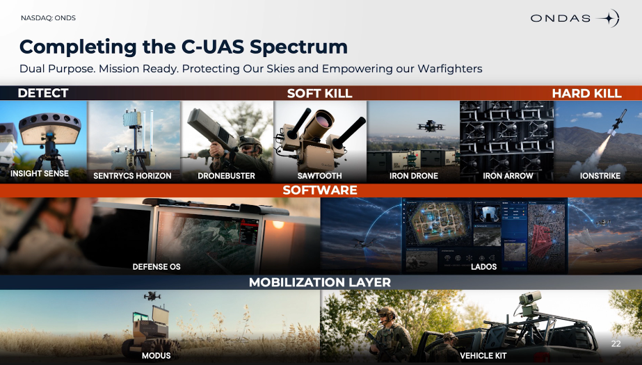
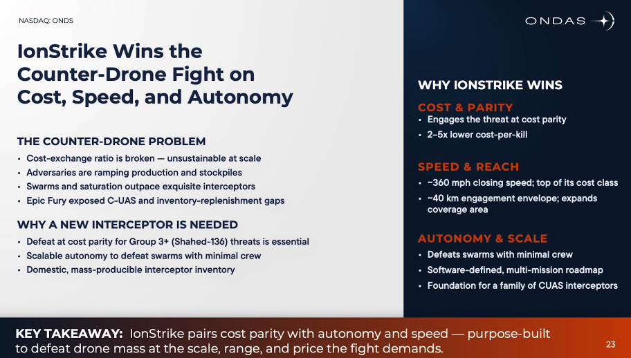

Ondas Inc. (NASDAQ: ONDS) spent Monday morning walking investors through its biggest purchase yet. The company acquired DZYNE Technologies for $875.8 million in cash and stock, then held an investor call to explain what the deal changes. We also got some major news surrounding future expected revenue. Ondas raised its 2026 revenue target from at least $390 million to at least $525 million which, we at the Zero Hour Group, still expect to be conservative. DZYNE did most of that gap lifting on its own and we expect its new IonStrike Platform to greatly increase the Ondas C-UAS technology stack with huge interest already present in the defense space.
The Deal
DZYNE shareholders, led by private equity firm Highlander Partners, received $200 million in cash plus about 85 million Ondas shares valued near $675 million. That stock grant hands DZYNE’s former owners about 13.8% of Ondas’ outstanding shares. Of those 85 million shares, 45 million sit under a six-month lock-up, a structure Ondas says balances DZYNE shareholders’ need for liquidity against long-term alignment with existing Ondas holders. Ondas also approved inducement grants tied to the deal: 500,000 restricted stock units and 1.5 million stock options at a $7.92 strike price, split across 255 new employees and vesting over three years.

On the financial side, DZYNE is projected to generate $191 million in revenue for 2026 and more than $300 million in 2027, with a revenue growth rate the company pegs above 80% CAGR from 2025 through 2028. DZYNE is also expected to turn EBITDA positive in 2026, with margins targeted in the mid-teens by 2027 and the mid-20% range by 2028. DZYNE is Ondas’ eighth acquisition announced or completed since November: Sentrycs, Rotron, INDO Earth Moving, World View, Mistral, Omnisys, the pending Cyberhawk deal, and now DZYNE.
Why DZYNE?
DZYNE brings three product lines that plug into gaps Ondas has been targeting to fill to complete it’s system of systems. The first is ULTRA, a long-endurance autonomous aircraft with tens of thousands of operational flight hours already logged. ULTRA flies multi-day ISR missions over large areas at a lower operating cost than traditional manned ISR aircraft, and it’s built for border security, maritime awareness, and communications relay. DZYNE’s LEAP platform fills a similar long-endurance theater ISR role. This will be key in tandem with Worldview ISR.

The second is IonStrike, a kinetic autonomous interceptor purpose-built to counter Shahed-136-class one-way attack drones and similar aerial threats. It gives Ondas a low-cost interception layer that complements existing air defense rather than competing with it on cost. This will tie into Sentrycs and American Robotics product lines.
The third is Dronebuster, among the most common handheld counter-UAS systems in the world, plus Blitz, an expendable Group 1 UAS with 150-kilometer range and swarm capability, and Grasshopper, an autonomous cargo glider that delivers up to 500 pounds into contested or denied environments.

DZYNE’s technology sits on top of more than $500 million in cumulative R&D investment, according to the companies. Matt McCue, DZYNE’s co-founder and CEO, becomes Chief Technology Officer of the new division housing the combined business.
How DZYNE Plugs Into Sentrycs and World View
Ondas has formed Ondas Sentinel, a new operating division built to house World View and DZYNE together. Ryan Hartman, the former CEO of World View, becomes CEO of Ondas Sentinel. McCue runs the technology side. The division exists to combine persistent ISR, counter-UAS, autonomous effects, and mission intelligence into one organization that can compete for larger, integrated defense programs instead of pitching single products.

Stack the ISR pieces on top of each other and the layers become clear to the trained eye. World View’s Stratollite platforms sit at the top, providing persistent stratospheric sensing, communications relay, and wide-area surveillance. DZYNE’s ULTRA and LEAP aircraft cover the theater layer below that, flying long-endurance missions over operational areas for extended periods. Ondas’ existing Optimus drone platform and InsightSense ground sensors handle the tactical edge, combining aerial reconnaissance with distributed ground sensing. Three altitudes that create one continuous intelligence picture, tied together by SkyWeaver, an AI-enabled mission operating system Ondas is building on Palantir’s Foundry and AIP platforms to fuse data across the DZYNE, World View, and Ondas portfolios.

The counter-UAS side follows the same logic, structured around a detect-identify-mitigate-defeat sequence. Sentrycs and Dronebuster handle detection. Sentrycs’ protocol analytics and AI-enabled classification handle identification. Sentrycs’ cyber takeover capability and Dronebuster’s electronic defeat tools handle mitigation. Iron Drone’s autonomous net interception and DZYNE’s IonStrike handle the final kinetic defeat. Before DZYNE, Ondas had detection, identification, and mitigation covered through Sentrycs and partial kinetic defeat through Iron Drone. IonStrike closes the remaining gap in that chain and added a fresh market to pursue with solutions to larger drones like Iran’s Shahed.

What This Means Going Forward

The $525 million revenue target folds in DZYNE and the Omnisys acquisition, which closed May 21. It does not include any contribution from Cyberhawk, the critical-infrastructure intelligence deal Ondas expects to close in the third quarter, which means the current guidance may understate where 2026 revenue lands if that deal closes on schedule. I expect that Eric Brock, CEO of Ondas Inc, is giving us the conservative picture. Expect an earnings revenue beat in August.

Beyond the numbers, the deal changes what kind of customer Ondas can chase. A defense program looking for one vendor that can detect a threat, identify it, jam or hack its control link, and stop it if all else fails now has that vendor in Ondas Sentinel. That matters as the Department of War leans harder into “affordable mass,” the strategy of fielding large numbers of low-cost, expendable systems instead of small numbers of expensive ones. Blitz and Grasshopper, 2 more DZYNE platforms, are built for that shift.

Risks and Open Questions
Dilution has been the top concern for the company and has kept the share price suppressed in recent months. Between World View, Mistral, Omnisys, and now DZYNE, Ondas has issued tens of millions of new shares in 2026 alone, and an active S-3 shelf registration keeps that resale capacity available going forward. We believe, while this strategy is aggressive, it will pay off in troves over the next decade as has strategically positioned themselves as a solution provider with the ability to successfully execute on large, future contracts globally.
The lock-up mechanics deserve a calendar note. About 45 million of the new DZYNE shares unlock in six months. That’s a supply event thats worth keeping on the radar and definitely helps investors in the short term. Short interest sat at 35.71% of shares outstanding as of mid-June, one of the higher short-interest names in the defense-tech space. With all of the positive catalysts and suppressed price, we think short interest will begin to disapate.
Integration is the piece with no hard number attached to it. Sentrycs, World View, and DZYNE are three separate businesses with three separate engineering cultures, now reporting into one new division led by executives who didn’t work together eight months ago. While The technology fits together easily on a slide, making it fit in the field is a different, difficult job. This is what wall street is holding its breath on. If execution is successful we expect share prices to boom.
Frequently Asked Questions From Our Viewers
What did Ondas pay for DZYNE Technologies? Ondas paid $875.8 million total: $200 million in cash plus about 85 million shares valued near $675 million.
What is Ondas Sentinel? Ondas Sentinel is the new operating division combining World View and DZYNE, led by Ryan Hartman as CEO and Matt McCue as CTO.
How does the DZYNE acquisition change Ondas’ 2026 revenue guidance? Ondas raised its 2026 target from at least $390 million to at least $525 million, including DZYNE and the Omnisys acquisition but excluding the pending Cyberhawk deal.
Is DZYNE profitable? DZYNE is expected to be EBITDA positive starting in 2026, with margins targeted in the mid-teens in 2027 and the mid-20% range by 2028.
What products does DZYNE bring to Ondas? DZYNE contributes the ULTRA and LEAP long-endurance ISR aircraft, the IonStrike kinetic interceptor, the Dronebuster handheld counter-UAS system, and the expendable Blitz and Grasshopper platforms.
Zero Hour Group covers the technology and deal flow behind drones, autonomous systems, and defense tech before the mainstream financial press catches up. By Retail Investors for Retail Investors. Not Financial Advice.